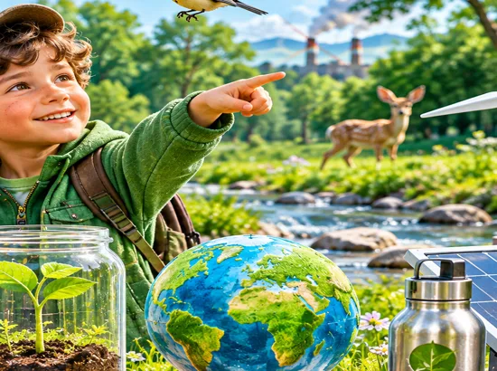

Урок 29 · Проєкт-дослідження
Як я впливаю на моє довкілля?
Ви — дослідники! Спостерігайте, приймайте рішення та перевіряйте, як щоденні вчинки змінюють природу.
🔎 Розпочати урок
Ваші відкриття: 0 із 7 місій
🔎 1. Помічайте довкілля
Розгляньте місця. Оберіть, де Ви можете допомогти природі, та поясніть чому.
Оберіть місце для спостереження.
🧩 2. Що допомагає, а що шкодить?
Перетягніть картки до потрібної групи або торкніться картки, а потім групи.
🌱 Допомагає природі
⚠️ Шкодить природі
🔬 3. Дослідіть наслідки
Порівняйте дві ситуації. Яке середовище буде здоровішим?

🎛️ 4. Симулятор «Наш двір через місяць»
Змініть кількість сміття, висаджених рослин і прибирань. Подивіться, як зміниться стан двору в умовній моделі.
Натисніть «Провести дослід»
Модель навчальна, а не точний екологічний прогноз.
💡 5. Подумайте: як діяти?
📝 6. Мініпроєкт «Мій добрий вплив»
Оберіть одну реальну проблему поруч із домом чи школою та складіть план дій.